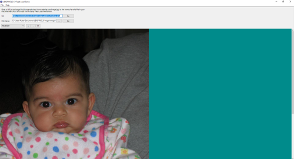

Feed Load DemoDemonstrates the Feed Load file loading with LEADTOOLS. Allows users to load image files for which all the data is not available at the start of the load process. For example, you can feed data to the load functions as chunks are downloaded from a remote location. |
 |